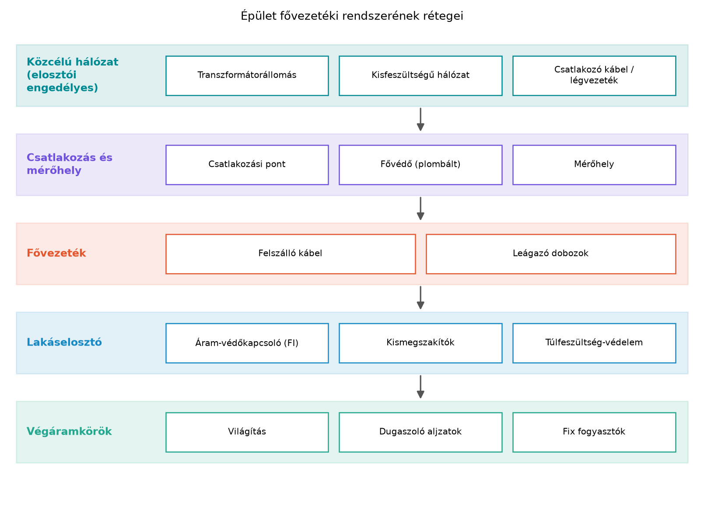
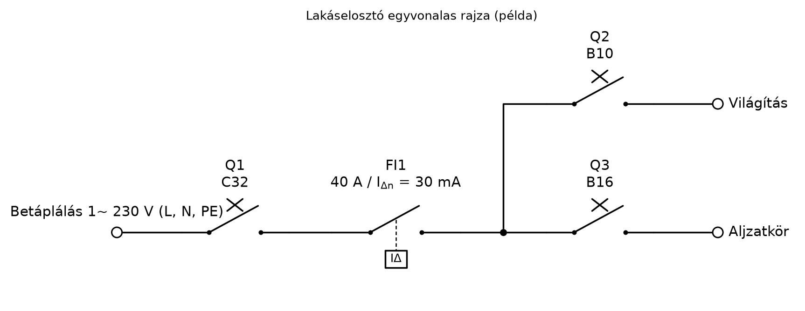

Egy lakásfelújítás vagy egy kisebb társasházi elosztócsere során a szerelő ritkán dolgozik előre gyártott, színezett, háromdimenziós látványtervből. Általában építész-alaprajzot és villamos tervet kap, amelyen a falakat vonalak, a kapcsolókat apró jelek, az áramköröket számok és nyomvonalak mutatják. Ha a terven rosszul azonosítod a váltókapcsoló és a dugaszoló aljzat jelét, rossz dobozt vésel a falba, és a szerelés végén szét kell bontani a vakolatot. Ha viszont érted a méretarányt, a jelkulcsot és az egyvonalas rajzot, akkor a terv alapján pontosan meg tudod mondani, hová kerül a lámpa, melyik áramkörről táplálod, és mekkora védelmet kell beépítened. Ez az alfejezet arra tanít, hogyan olvass és rajzolj lakásvillamossági tervet, fővezetéki sémát és elosztó-egyvonalas rajzot.
Képzelj el egy 54 m²-es lakást. A terv 1:50 méretarányban készült. A
szobák mennyezetén X-es körök jelölik a lámpákat, a falakra rajzolt
vonalak a kapcsolókat, a padlószint közelébe rajzolt félkörök jelölik a
dugaszoló aljzatokat. A szobából egy vonal (a világítási körnél
folytonos, az aljzatkörnél szaggatott) fut a lakáselosztóhoz, mellette
Q2 – 3×1,5 mm² felirat áll. Ez a rajz egyszerre mutatja az
épület geometriáját és a villamos hálózat kiépítését.
Az ábrán a falak vastag, az ablakok kettős vékony vonallal látszanak, az ajtók a falak hézagai. A mennyezeti lámpák körben X-szel, a kapcsolók kis körrel és ferde vonallal (a soros kapcsolón két, a váltókapcsolón két irányban egy-egy jelzővonás), a védőérintkezős aljzatok félkörrel jelöltek; a fürdőszobai aljzat mellett az IP44 védettség áll. Az előtérben lévő lakáselosztótól (vonalkázott téglalap) induló nyomvonalak áramkörönként más vonaltípusúak, mellettük az áramkörjel és a kábel keresztmetszete (pl. „Q2 3×1,5”); a nappali alatt az 5,20 m-es méretvonal az 1:50-es tervlapon 10,4 cm. A jelkulcs a jobb oldalon van. A HTML-változatban a rétegek (építész-alaprajz, világítás, aljzatok, nyomvonalak) ki-be kapcsolhatók, egy nyomvonalra kattintva kiemelődik az áramkör és a hozzá tartozó kismegszakító, a méretarány-mérővel pedig két pont rajzi és valós távolsága olvasható le.
A villamos terv mindig egy építész-alaprajzból indul. Az építész terv mutatja a falakat, nyílászárókat, méretvonalakat, helyiségek megnevezését és a padlóburkolat szintmagasságát. A villamos szakág erre helyezi rá a lámpákat, kapcsolókat, aljzatokat, elosztókat és a vezetékek nyomvonalát.
Definíció. Az alaprajz egy vízszintes metszet, amely az épületet kb. 1,0–1,2 m magasságban metszve mutatja. A metszet az épületen függőlegesen átvett nézet, amelyen látszik a helyiségek magassága, a födémek és a berendezési magasságok.
A méretarány az arány a rajzon mért hossz és a valóságos hossz között. A gyakori méretarányok:
Számítás. Ha a nappali valós hossza , és a rajz 1:50 méretarányú, akkor a rajzi hossz:
A tervolvasás során ezt visszafelé is el kell tudni végezni: ha a rajzon -t mérsz, a valóságos hossz .
A villamos tervjeleket a rajz jelkulcsa vagy az MSZ EN 60617 szabványrajzok határozzák meg. A gyakorlatban minden tervlapon megtalálod:
Q2,
Q3 (ugyanaz, mint az egyvonalas rajzon és az
áramkörlistán).A tervjelek pontos megjelenését a terven szereplő jelkulcsból kell ellenőrizni; a fejezet ábráin a magyar gyakorlat szerinti, egyszerűsített jeleket használjuk.
Szabvány. Az MSZ EN 60617 sorozat az IEC villamosipari rajzjeleket tartalmazza. A kapcsolási rajzokon, alaprajzokon és egyvonalas rajzokon használt jeleket ehhez kell igazítani. A tervlapnak tartalmaznia kell a jelkulcsot, a méretarányt, a rajzszámot, a beruházó és tervező adatait, valamint a dátumot és a méretarány szerinti feliratot. (ellenőrizendő: a szabványsorozat aktuális tagjai és a vonatkozó rajzszámok.)
A lakásvillamossági terv a szerelhetőség szempontjából két fő részből áll:
A rajzolás elsődleges célja nem a kábelek nyomvonalának minden részlet szerinti ábrázolása, hanem a telepítési pontok, áramkörök és védelmek egyértelmű megadása.
NYM-J 3×1,5 mm²).A terven a vezeték nyomvonalát szaggatott vagy folyamatos vonal jelöli, és gyakran csak az elosztó és a fogyasztó közötti útvonal látszik. A mennyezeti lámpákhoz a fal síkjában függőlegesen leforduló vezetékeket nem mindig rajzolják be, mert a szerelő a szerelési zónákból tudja, hol futhat a vezeték.
A lakásvillamossági terv csak a végáramköröket mutatja. Egy társasházban vagy kisebb üzemi épületben a fővezetéki terv mutatja meg, hogyan jut el a villamos energia a közcélú hálózattól a mérőhelyig, majd onnan a lakáselosztókig.
A fővezetéki terv jellemző elemei:
A fővezetéki terv gyakran egyvonalas séma formájában is megjelenik, de alaprajzon is jelölik a kábelnyomvonalat. A fővezeték keresztmetszetét a terhelés, a feszültségesés és a zárlati viszonyok határozzák meg.
Példa fővezetéki hierarchiára. Réteges ábrán jól áttekinthető:

Az ábra mutatja az energia útját: a közcélú hálózattól a végáramkörökig. A szerelő ebből tudja, melyik fogyasztói áramkör melyik elosztó alá tartozik, és hol kell a védelmet beépíteni.
Definíció. Az egyvonalas rajz egy olyan kapcsolási rajz, amely a háromfázisú (vagy egyfázisú) hálózat mindhárom fázisát egyetlen vonallal ábrázolja, és csak az áramkörök sorrendjét, a védelmi és kapcsolóeszközöket, valamint a fogyasztó megnevezését tünteti fel. A nulla- és védővezetőt általában külön nem részletezik, vagy jelképesen jelölik.
Az elosztó egyvonalas rajza a kivitelezés és a felülvizsgálat egyik legfontosabb dokumentuma. Ebből derül ki:
Az alábbi kapcsolási rajz egy lakáselosztó egyszerű egyvonalas sémáját mutatja:

A rajzon a betáplálás fázisa balról érkezik. A Q1 főmegszakító után a FI1 védi az egész elosztót. A FI1 (40 A névleges áram, 30 mA névleges differenciaáram) kimenetéről egy csomópontból két párhuzamos leágazás indul: Q2 B10 a világításhoz, Q3 B16 az aljzatkörhöz (ugyanazok a jelek, mint az alaprajzon és az áramkörlistán). A valóságban a nulla- és védővezetőket is be kell kötni, de az egyvonalas rajzon az áramkör sorrendjét mutatjuk meg.
A villamos terven nemcsak fogyasztók és kapcsolók, hanem védelmi és hálózati elemek is megjelennek:
A hálózati nyomvonalrajz a kábel vagy légvezeték tényleges nyomvonalát mutatja az utca vagy a telek alaprajzán, méretadatokkal, kábelkereszteződésekkel és a környező közművekkel. A felmérés során ezt használjuk arra, hogy meghatározzuk a csatlakozó kábel hosszát, a mérőhely és a főelosztó helyét. A gyakorlatban ezt a rajzot a hálózati engedélyes az áramszolgáltatói követelmények szerint készíti; a szerelő csak ellenőrzi a csatlakozási pontot, a nyomvonalat és a szükséges építési, bontási munkákat.
Példa (1). Egy lakás nappalijának valós mérete: . A terv 1:50 méretarányú. Mekkora a helyiség rajzi mérete? Visszafelé: a rajzon a konyha hossza . Mekkora a valós hossza?
Számítás. A rajzi méretek:
Visszafelé: ha a rajzon a konyha hosszát -nek mérjük, a valóságos hossz:
Ellenőrzés: ha a terven méretvonal is szerepel (4,90), a két érték egyezik – ha nem, a rajz nem méretarányos (pl. fénymásolat kicsinyítése), és csak a méretszámnak hihetünk (méretszám > lemért hossz). A tervolvasásnál mindig ellenőrizzük a méretarányt a berajzolt méretvonallal is.
Példa (2). Rajzoljuk fel egy 3 szobás lakás elosztójának egyvonalas rajzát. Az áramkörök és védelmek:
A szöveges feldolgozás után a kapcsolási rajzlapon a következő kell: betáplálás, Q1 főmegszakító, FI1 és FI2 30 mA, majd a hat kismegszakító (Q2–Q3 az FI1 alatt, Q4–Q7 az FI2 alatt) és a fogyasztói csatlakozások. A gyakorlatban az áramköröket több áram-védőkapcsoló között osztjuk meg, hogy egy hiba vagy szivárgás ne sötétítse el az egész lakást, és ne kapcsolja le a hűtőt és a világítást egyszerre (ellenőrizendő: MSZ HD 60364-1); a fenti egyszerűsített egyvonalas rajz külön példa: oktatási célból egyetlen FI1-et és csak a Q2, Q3 kört mutatja. Az áramköri rajzon az egyes fogyasztókat téglalappal vagy körrel jelöljük.
A szerelői gyakorlatban minden egyvonalas rajzhoz tartozik egy áramkörlista:
| Jel | Védelmi eszköz | Fogyasztó | Vezeték (példa) |
|---|---|---|---|
| Q2 | B10 | Világítás | NYM-J 3×1,5 mm² |
| Q3 | B16 | Aljzatok nappali, háló | NYM-J 3×2,5 mm² |
| Q4 | B16 | Konyhai aljzatok | NYM-J 3×2,5 mm² |
| Q5 | B16 | Hűtőgép | NYM-J 3×2,5 mm² |
| Q6 | B16 | Mosógép | NYM-J 3×2,5 mm² |
| Q7 | B16 | Bojler | NYM-J 3×2,5 mm² |
A pontos keresztmetszetet és védelmi értékeket a tervező méretezi; a táblázat csak példa.
Egy társasházi felújítás során a szerelő kapott egy régi, jelkulcs nélküli tervet. A tervrajzon a kapcsolójelek helyén többféle szimbólumot látott, és a szerelő az aljzatkörök nyomvonalát a világítási áramkörrel keverte. A szerelés közben kiderült, hogy a konyhai aljzatokra nem jutott FI-védelem, és a bojler a világítási kismegszakítóról táplálkozott volna. A hibás értelmezés miatt a szerelő újra kellett nyissa a falat, hogy a megfelelő áramkört kialakítsa. Tanulság: jelkulcs és egyvonalas rajz nélkül ne kezdj szerelésbe. Ha a terv nem egyértelmű, kérdezd meg a tervezőt, és a kivitelezés előtt ellenőrizd az áramkörök számozását.
Cél: adott áramkörlista alapján készítsd el a lakáselosztó egyvonalas rajzát.
Eszközök, anyagok: papír, ceruza, vonalzó, rajzsablon vagy számítógépes rajzprogram; az áramkörlista és az elosztó típusa.
Biztonsági korlát. Ez a feladat rajzolási feladat, de ha élő, hálózati feszültségű elosztóról készítesz rajzot, a munkát csak feszültségmentesítés után, jogosult személy felügyeletével végezheted. A feladatok tanműhelyi környezetre vagy oktatói felügyeletre vonatkoznak; hálózati feszültségen önállóan ne dolgozz.
Az öt biztonsági szabály akkor is érvényes, ha a rajz kedvéért meg kell nézned egy meglévő elosztót: 1. lekapcsolás; 2. visszakapcsolás elleni biztosítás; 3. feszültségmentesség ellenőrzése; 4. földelés és rövidre zárás; 5. szomszédos feszültség alatti részek lefedése.
Lépések:
L1 fázis (és ha háromfázisú,
akkor L1-L2-L3), nulla-, védővezető.Q1,
FI1, Q2…), névleges árama (B16,
C32) és a fogyasztói kör megnevezése.Ellenőrző pontok:
Dokumentálás: a rajzon tüntesd fel a rajzszámot, a dátumot, a tervező nevét és a változatot. A kész rajzot az elosztó ajtajában is elhelyezik.
1. feladat (A). Számítsd át 1:100 méretarányra a nappali méretét: valós hossz 5,4 m, szélesség 4,2 m. Mekkora lesz a rajzi méret centiméterben?
2. feladat (A). Sorold fel, milyen villamos tervjeleket találsz egy lakás alaprajzán, és mondd el, miért fontos a jelkulcs.
3. feladat (B). Rajzold fel a lakáselosztó egyvonalas rajzát: Q1 C32 főmegszakító, FI1 30 mA, Q2 B10 világítás, Q3 B16 aljzatok nappali, Q4 B16 hűtő, Q5 B16 mosógép. Jelöld a fogyasztói csatlakozásokat.
4. feladat (B). Egy konyha valós mérete 3,8 m × 2,9 m. A terv 1:50 méretarányú. Mekkora a rajzi méret? Ha a rajzon a konyhapult 6,4 cm hosszú, mekkora a valós hossz?
5. feladat (C). Adott elektromos terv: a fürdőszobai aljzatoknál FI-védelem nincs, csak B16-os megszakító védi az áramkört. A terven nincs EPH a fürdőszobában. Milyen hibák vannak? Javítsd ki az egyvonalas rajzot: FI-relé beépítése és EPH jelölése.
6. feladat (D). Hibakeresés: az elosztó egyvonalas rajza szerint a bojler a világítási körre van kötve (B10), a konyha aljzatai FI nélkül, a mosógép védővezetője nincs bekötve. Mi a probléma? Módosítsd a rajzot: a bojler kerüljön külön B16-os körre, a konyha és a mosógép FI-védelem alá, a védővezetőt jelöld be.
1. feladat (A) megoldása.
1:100 méretarány mellett a rajzi méret a valós méret 1/100-a.
A nappali rajzi mérete 5,4 cm × 4,2 cm.
2. feladat (A) megoldása.
A tervjelek: lámpatest, kapcsoló, váltókapcsoló, keresztkapcsoló,
aljzat, elosztó, EPH, vezeték-nyomvonal. A jelkulcs azért fontos, mert a
jelek országonként és tervezőnként kissé eltérhetnek, és csak a jelkulcs
ad egyértelmű azonosítást.
3. feladat (B) megoldása.
Szövegesen: betáplálás 230 V → Q1 C32 → FI1 30 mA → majd négy
kismegszakító: Q2 B10 (világítás), Q3 B16 (aljzatok nappali), Q4 B16
(hűtő), Q5 B16 (mosógép). A FI1 után a megszakítók fáziscsatlakozásai
párhuzamosan vannak a gyűjtősínen. Rajzban a 12.3.6 alszakasz egyvonalas
rajzához hasonló, de a fogyasztói neveket külön sorok jelölik.
4. feladat (B) megoldása.
1:50 méretarány:
Ha a rajzon 6,4 cm-t mérek, a valós hossz:
5. feladat (C) megoldása.
Hibák: a fürdőszobai áramkört nem védi 30 mA-es FI-relé. A helyes
megoldás: 30 mA-es FI-relé beépítése az elosztóba, a fürdőszobai
aljzatokat a FI alá kötni. Az EPH-t a szabvány feltételei szerint kell
megítélni: a fő egyenpotenciálra hozás (fő EPH) meglétét mindenképp
ellenőrizni kell; a kiegészítő EPH akkor lehet elhagyható, ha minden
fürdőszobai áramkör 30 mA-es RCD-vel védett és a fő EPH kiépített,
egyébként a fürdőszobában kiépítendő (fémszerkezetek, víz- és
fűtésvezetékek EPH-bekötése; ellenőrizendő: MSZ HD 60364-7-701 hatályos
kiadás).
6. feladat (D) megoldása.
Problémák: a bojler B10-es világítási körön túlterhelhet; a konyha és a
mosógép FI nélkül hibavédelmileg hiányos; a mosógép védővezetője
hiányzik. Módosítás: a bojler külön B16-os áramkörre, a konyhai
aljzatkör és a mosógép 30 mA-es FI alá, a mosógép PE vezetőjét bekötni a
védővezető-gyűjtősínbe.
Az épületvillamossági terv egy építész-alaprajzra illesztett villamos dokumentáció. A méretarány (1:50, 1:100) határozza meg a rajzi és a valós méretek közötti átszámítást: a valós hosszt a rajzi hossz és a méretarányszám szorzataként kapjuk. A tervjeleket az MSZ EN 60617 szabvány és a terv jelkulcsa adja meg; a lámpatest, kapcsoló, aljzat, elosztó és EPH-jelet mindig a jelkulcs alapján azonosítsd. A lakásvilágítási és aljzatterv a végáramköröket mutatja, a fővezetéki terv a mérőhelytől a lakáselosztóig tartó hálózatot. Az elosztó egyvonalas rajza az áramkör sorrendjét, a védelmi eszközöket (főmegszakító, FI-relé, kismegszakítók) és a fogyasztói köröket tünteti fel. Továbbvitt eredmény. Az itt megtanult egyvonalas rajzot használjuk a Kapcsolók és mágneskapcsolók rajzjelei, kapocsjelölések alfejezetben, amikor a jelölések részletesebb olvasására térünk át, valamint a Felmérés, tervértelmezés és szerelési technológia alfejezetben, ahol a terv alapján kivitelezünk. A rajzolvasásnál mindig ellenőrizd a jelkulcsot, a méretarányt és az áramkörök védelmét.